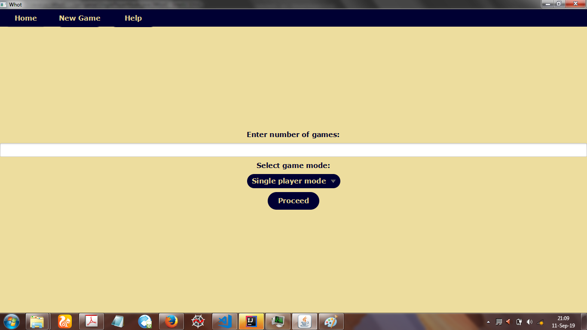

Whot is a classic card game. It is the most popular card game in Nigeria.
A Whot card suite consists of 54 cards with 6 suits: Ball, Angle, Carpet, Cross, Star and Whot.
| Suit | Numbers | |||||||||||
|---|---|---|---|---|---|---|---|---|---|---|---|---|
| Ball | 1 | 2 | 3 | 4 | 5 | 7 | 8 | 10 | 11 | 12 | 13 | 14 |
| Angle | 1 | 2 | 3 | 4 | 5 | 7 | 8 | 10 | 11 | 12 | 13 | 14 |
| Carpet | 1 | 2 | 3 | 5 | 7 | 10 | 11 | 13 | 14 | |||
| Cross | 1 | 2 | 3 | 5 | 7 | 10 | 11 | 13 | 14 | |||
| Star | 1 | 2 | 3 | 5 | 7 | 8 | ||||||
| Whot | 20 | 20 | 20 | 20 | 20 |
The aim of the game is to play your cards until you have no card at hand. You can only play a card if it has the same number or suit as the last played card. A card can also be played if it is a Whot card. If a playable card cannot be found, you have to go to the market.
There are some special cards denoted by their numbers:
On launching the application, enter your preferred number of games to play and select your game mode. Then proceed.

To play, click on any card of your choice in the User Cards Area. If you can't find a playable card, click
on the Market cards pile. Continue in this way until a winner is found.
When the Next Move Label displays Pick Two, Pick Three or General Market, you would
have to click on the Market Cards Pile to continue.